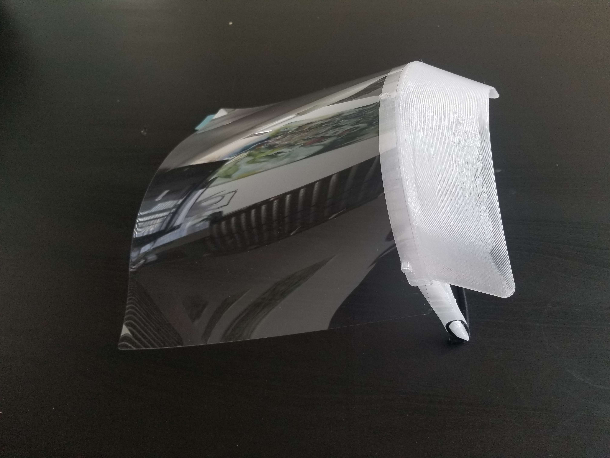
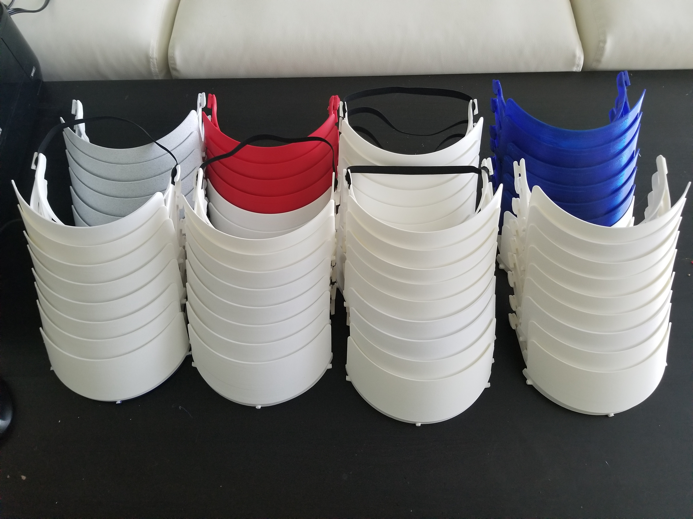
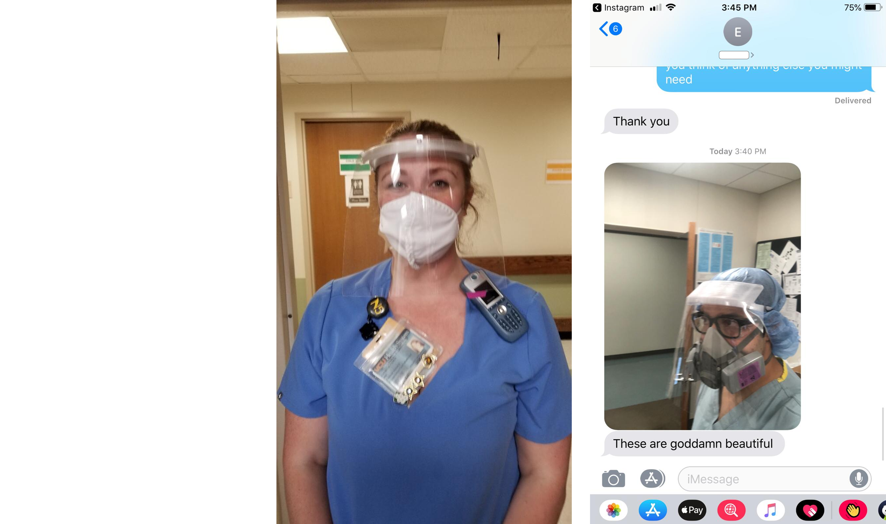

<div class="row">
  <div class="col-sm-12">
    <div id="carouselExampleControls" class="carousel slide" data-ride="carousel">
      <ol class="carousel-indicators">
        <li data-target="#carouselExampleControls" data-slide-to="0" class="active"></li>
        <li data-target="#carouselExampleControls" data-slide-to="1"></li>
        <li data-target="#carouselExampleControls" data-slide-to="2"></li>
        <li data-target="#carouselExampleControls" data-slide-to="3"></li>
        <li data-target="#carouselExampleControls" data-slide-to="4"></li>
        <li data-target="#carouselExampleControls" data-slide-to="5"></li>
       <!--  <li data-target="#carouselExampleControls" data-slide-to="6"></li>
        <li data-target="#carouselExampleControls" data-slide-to="7"></li> -->
        <!-- <li data-target="#carouselExampleControls" data-slide-to="8"></li>
        <li data-target="#carouselExampleControls" data-slide-to="9"></li> -->
      </ol>
      <div class="carousel-inner" role="listbox">
        <div class="carousel-item active">
          
        </div>
        <!-- <div class="carousel-item">
          <iframe width=100% height=100% src="https://www.youtube.com/embed/VW-YvedJsL0"  allowfullscreen></iframe>
        </div> -->
        <!-- <div class="carousel-item">
          <video width=100% height=100% controls autoplay loop>
            <source src="../18_romu/sim.mp4" type="video/mp4">
          </video>
        </div> -->
        <div class="carousel-item">
          
        </div>
        <div class="carousel-item">
          
        </div>
        <div class="carousel-item">
          
        </div>
        <div class="carousel-item">
          
        </div>
        
        <div class="carousel-item">
          
        </div>
        <!-- <div class="carousel-item">
          
        </div> -->
        <!-- <div class="carousel-item">
          
        </div>
        <div class="carousel-item">
          
        </div>
        <div class="carousel-item">
          
        </div> -->
      </div>
      <a class="carousel-control-prev" href="#carouselExampleControls" role="button" data-slide="prev">
        <span class="carousel-control-prev-icon" aria-hidden="true"></span>
        <span class="sr-only">Previous</span>
      </a>
      <a class="carousel-control-next" href="#carouselExampleControls" role="button" data-slide="next">
        <span class="carousel-control-next-icon" aria-hidden="true"></span>
        <span class="sr-only">Next</span>
      </a>
    </div>

    <div class="main-text hidden-xs">
      <div class="projDesc">
        <h2>Face Shields</h2> <br>
        <p> <a href='../18_romu/home'>Cambridge, 2020 </a> <br> <br>
        In response to the widespread PPE shortages in the early days of the COVID-19 pandemic, Harvard Science Center staff (Rob, Victoria, Nathan and Jeremy) organized an effort to use the lab's 3D printers to produce face shields. Since hospitals in the metro Boston area were already well-stocked, we shipped the face shields to hospitals in Detroit, MI and Richmond, VA. We built upon existing open-source designs, modified them to suit the requests of the front-line workers we were making them for, and open-sourced our design in turn. 
 <br> <br>
        3D Model: <a href='https://www.thingiverse.com/thing:4358325'>Thingiverse</a>


        </p>
     </div>
    </div>
  </div>
</div>